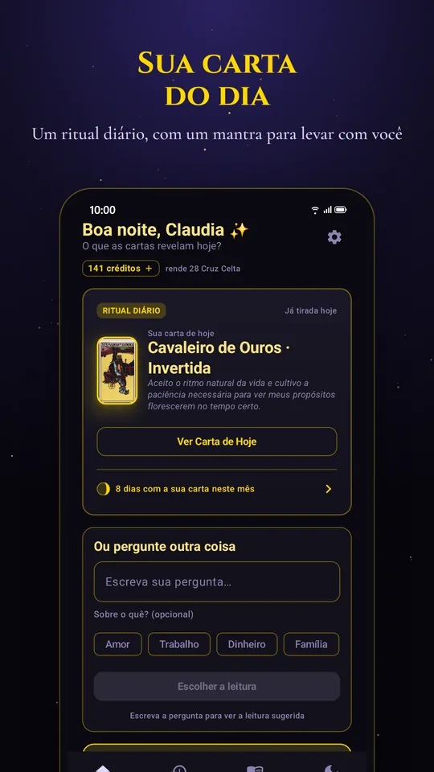
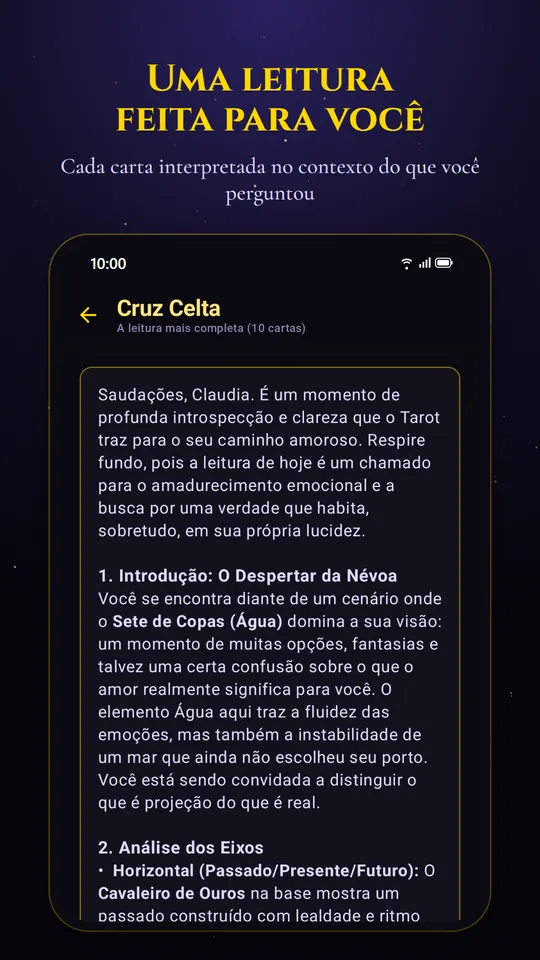
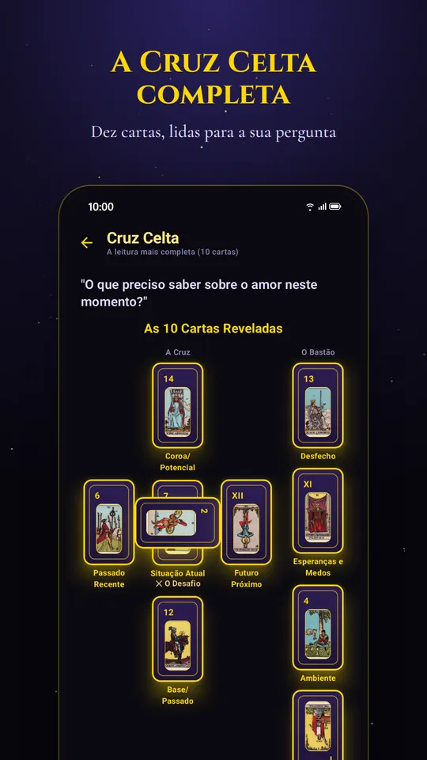
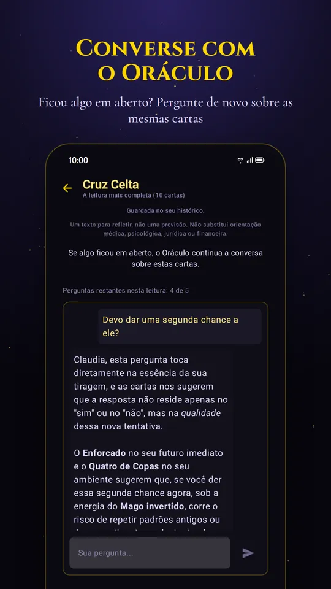
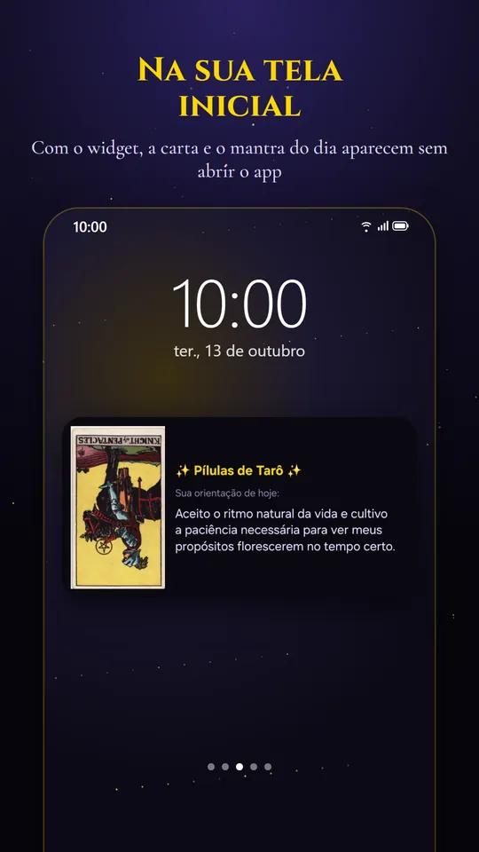
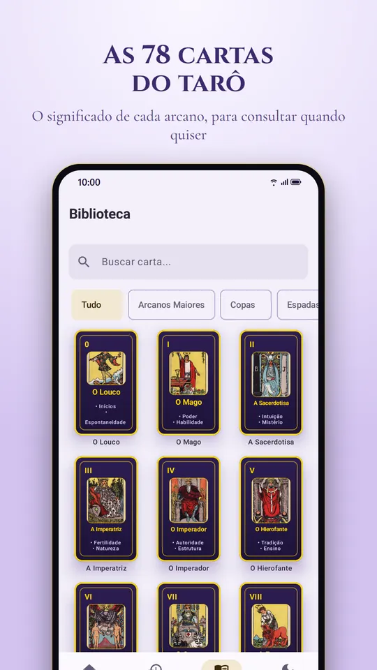

Tarô no seu celular · Android
Um minuto por dia com as cartas
Tire a sua Carta do Dia, grátis. Quando a pergunta for séria, a leitura fala dela, carta por carta.
- Grátis para baixar
- Carta do Dia grátis, todo dia
- 3 créditos de boas-vindas
- Sem anúncios

Como funciona
Um ritual curto, feito com calma
Escreva a sua pergunta
Sobre amor, trabalho, uma decisão ou o seu dia. O app sugere a tiragem que combina com ela.
Embaralhe e escolha
Você embaralha e tira as cartas do leque, uma a uma, como numa mesa de verdade.
Leia e converse
A leitura interpreta cada carta à luz da sua pergunta, e depois você pode continuar a conversa com o Oráculo.
O que nos diferencia
A mesma pergunta, a mesma resposta
Se você repetir a pergunta nos 30 dias seguintes, mesmo com outras palavras, o app devolve as mesmas cartas e a mesma leitura, e não gasta crédito.
Um tarô que muda de resposta quando você insiste não está respondendo: está concordando.
Segunda-feiraDevo aceitar a proposta de emprego nova?
Três CartasO Oito de Copas, o Ás de Ouros e o Sete de Ouros. Há algo que você já está pronta para deixar, e uma oportunidade concreta…
Quarta-feiraVale a pena trocar de emprego agora?
Mesma pergunta, feita na segundaAs cartas são as mesmas: o Oito de Copas, o Ás de Ouros e o Sete de Ouros. A leitura também.
Exemplo ilustrativo





Tiragens e créditos
Você sabe o custo antes de perguntar
A Carta do Dia é grátis para sempre. As outras leituras usam créditos, e a instalação já traz 3.
- Grátis todo dia
Carta do Dia
Uma carta para o seu dia, com um texto para refletir e um mantra para levar com você.
grátis · 1 carta, todo dia Sim ou Não
Uma resposta direta para uma pergunta fechada.
1 crédito · 1 cartaTrês Cartas
Passado, presente e futuro da situação que você descreveu.
3 créditos · 3 cartasAmor
Um relacionamento, um encontro, um sentimento que não está claro.
3 créditos · 3 cartasCarreira e Dinheiro
Uma decisão de trabalho, uma mudança, a vida financeira.
3 créditos · 3 cartasCruz Celta
A leitura mais completa: a situação inteira, do que a cerca ao desfecho provável.
5 créditos · 10 cartas
- Custo dito antesAparece antes de você escrever a pergunta, nunca depois.
- Créditos sem validadeOs que você compra não vencem.
- Teto de gastoVocê define quanto pode gastar por mês, se quiser.
- Pergunta repetida não pagaA regra dos 30 dias devolve a leitura sem cobrar.
Experimente agora
Tire uma carta agora
Respire, pense numa situação e toque na carta. Ela sai de um baralho completo, com as 78 cartas.
A sua carta
No app, a leitura fala da sua pergunta, e não só da carta.
Biblioteca
O significado das 78 cartas
Direita e invertida, no amor, no trabalho e como conselho. Comece pelos Arcanos Maiores, ou veja todas as cartas.
 O Louco
O Louco O Mago
O Mago A Sacerdotisa
A Sacerdotisa A Imperatriz
A Imperatriz O Imperador
O Imperador O Hierofante
O Hierofante Os Amantes
Os Amantes O Carro
O Carro A Força
A Força O Eremita
O Eremita Roda da Fortuna
Roda da Fortuna A Justiça
A Justiça O Enforcado
O Enforcado A Morte
A Morte A Temperança
A Temperança O Diabo
O Diabo A Torre
A Torre A Estrela
A Estrela A Lua
A Lua O Sol
O Sol O Julgamento
O Julgamento O Mundo
O MundoPerguntas frequentes
Antes de baixar
O app é grátis?
Baixar é grátis, e a Carta do Dia é grátis todos os dias. As outras leituras usam créditos: a instalação traz 3 e você ganha 1 por mês. Se quiser mais, há pacotes ou a assinatura, com o preço mostrado pela Google Play antes de qualquer compra.
O que acontece se eu fizer a mesma pergunta de novo?
Nos 30 dias seguintes, mesmo com outras palavras, o app devolve as mesmas cartas e a mesma leitura, com a data da consulta anterior, e não gasta crédito.
A leitura é uma previsão?
Não. É um texto para refletir sobre a sua situação a partir das cartas. Não substitui orientação médica, psicológica, jurídica ou financeira.
O que vocês fazem com a minha pergunta?
O conteúdo das suas leituras fica no seu aparelho, e o nosso servidor não guarda a sua pergunta. Não há anúncios. Os detalhes estão na Política de Privacidade.
Os créditos vencem?
Os créditos comprados não vencem. E você pode definir um teto de gasto por mês, se quiser.
Funciona no iPhone?
Por enquanto, o Pílulas de Tarô é só para Android, pelo Google Play.
A sua carta de hoje está esperando
Um minuto, uma carta e uma pergunta para levar com você.
Baixar grátis noGoogle Play- Grátis para baixar
- Carta do Dia grátis, todo dia
- 3 créditos de boas-vindas
- Sem anúncios